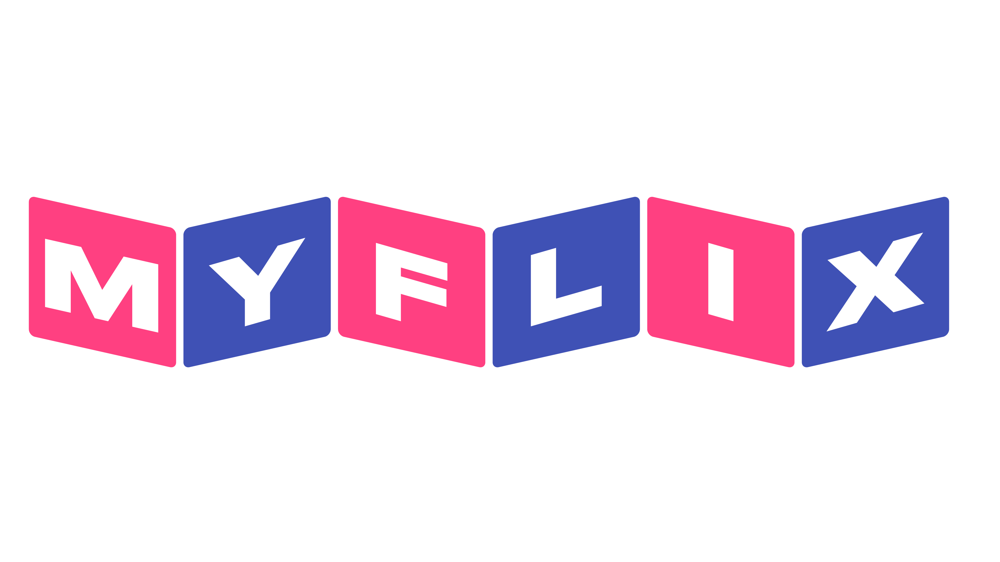

<div style="display: flex;">
  <mat-toolbar color="primary" style="width: 100hv; position: fixed; z-index: 1000; background-color: #1d1d1d; height: 100px;">
    
    <mat-menu #appMenu="matMenu" id="navMenu">
      <button class="menuItem" 
      style="font-family: 'akzidenz-grotesk-roman', Arial, Helvetica, sans-serif; text-transform: uppercase;"
      mat-menu-item 
      (click)="goToMovies()"
        >
          <mat-icon>home</mat-icon> 
          Home
        </button>
      <button class="menuItem" 
      style="font-family: 'akzidenz-grotesk-roman', Arial, Helvetica, sans-serif; text-transform: uppercase;"
      mat-menu-item (click)="goToProfile()"><mat-icon>manage-account</mat-icon> Profile</button>
      <button class="menuItem" 
      style="font-family: 'akzidenz-grotesk-roman', Arial, Helvetica, sans-serif; text-transform: uppercase;"
      mat-menu-item (click)="logout()"><mat-icon>meeting_room</mat-icon> Logout</button>
      
    </mat-menu>
    <button mat-icon-button [matMenuTriggerFor]="appMenu">
      <mat-icon>menu</mat-icon>
    </button>
      
  </mat-toolbar>
</div>